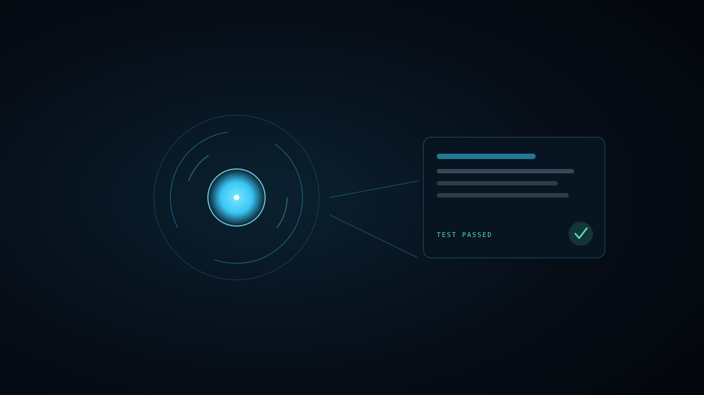
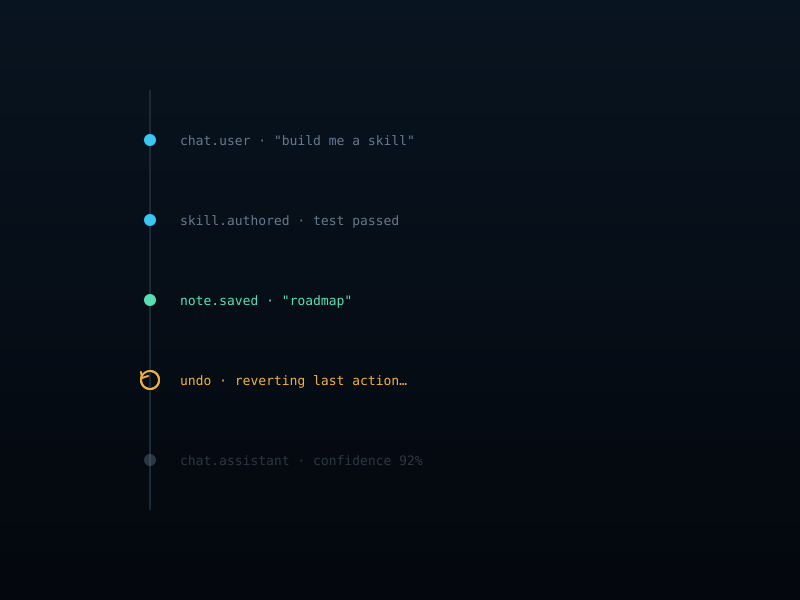

It grows its own skills.
Ask for a new ability and Jarvis writes the code and a test for it, proves the test passes, and refines on failure. Skills that can't prove themselves are flagged and refuse to run. The library compounds — every session, it can do a little more.

It remembers how it reasons.
Jarvis re-reads its own action log and keeps short lessons about what worked and what failed. Those lessons ride along in future prompts, so it improves from its own experience — not just from what you tell it.
It tells you when it's unsure.
Every answer carries the model's own confidence. Below a threshold, Jarvis asks a clarifying question instead of guessing. The gauge lives on the core, so you always know how much to trust the last thing it said.

You can undo anything.
Every action is recorded with enough state to reverse it. Undo a chat turn, a saved note, or a skill change from the timeline — and run a replay audit that proves the log reproduces memory exactly. Nothing it does is permanent unless you want it to be.
It's yours. And it's free.
Local by default — inference runs on your own machine through Ollama, with free cloud tiers only as a fallback. No paid API is ever required, and your data never has to leave the room.
Apache-2.0 · Windows & macOS · built in the open